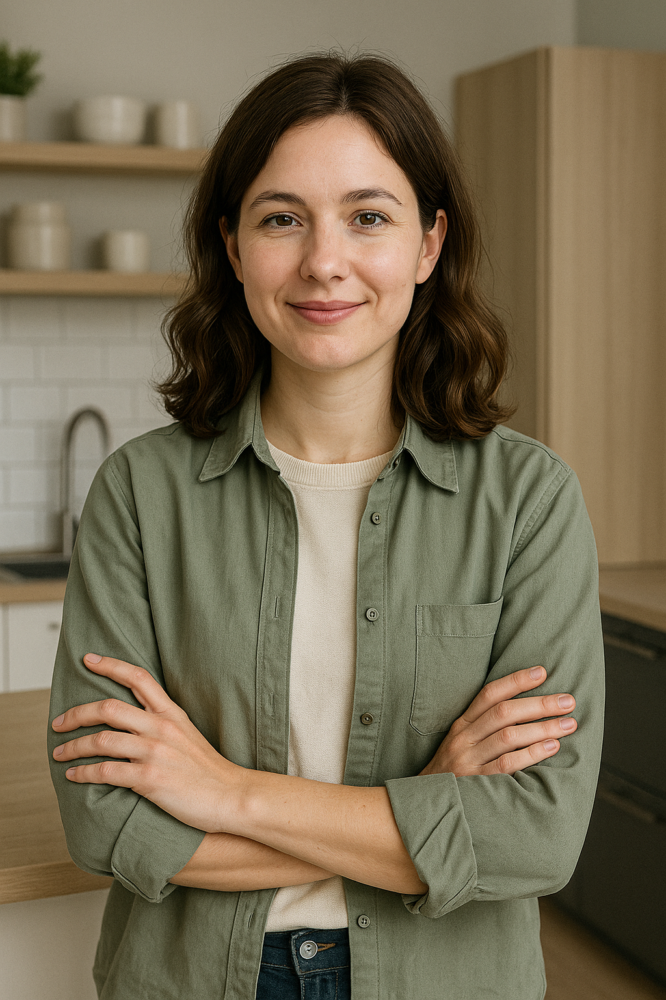
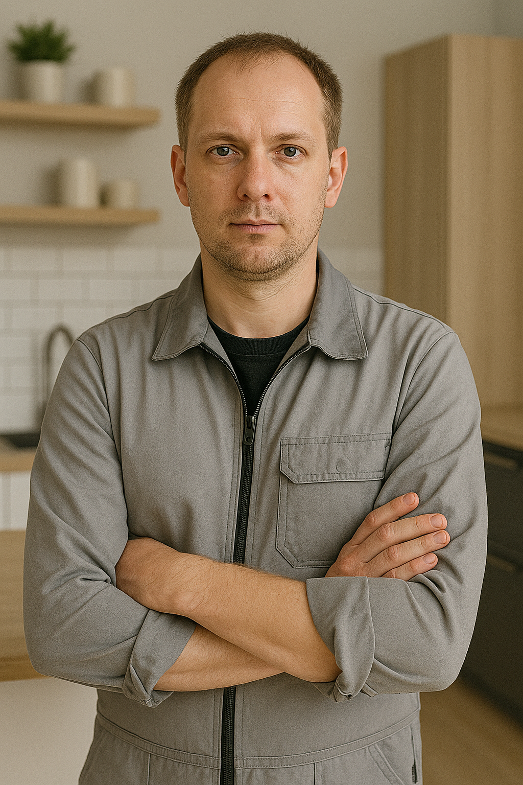
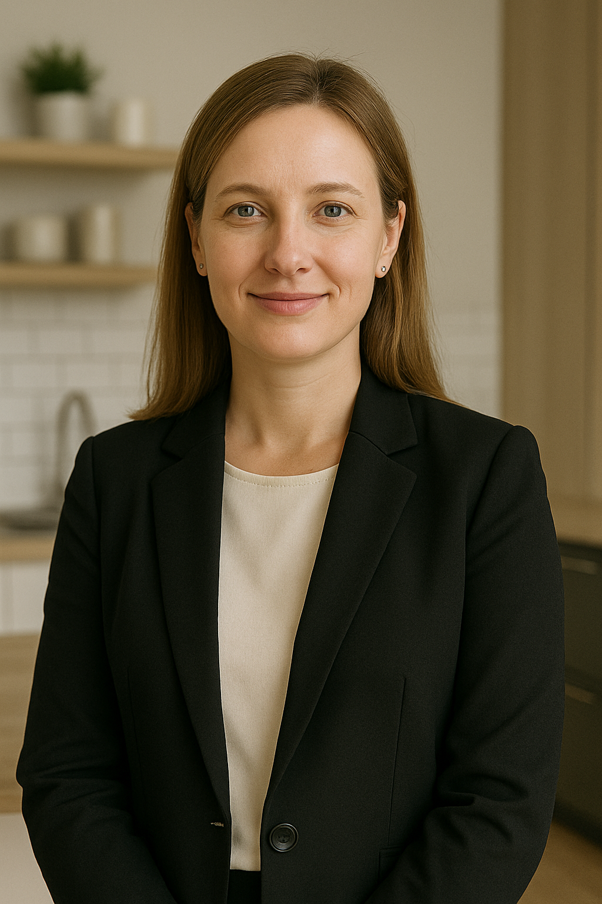

О компании GUT
Мы создаём не просто кухни — мы создаём пространства, в которых хочется жить, готовить и вдохновляться. Уже более 10 лет мы разрабатываем и производим кухонные гарнитуры премиум-класса с индивидуальным подходом к каждому клиенту.
Наша миссия
Предлагать высококачественные кухонные решения, сочетающие элегантность, функциональность и долговечность. Мы уверены, что кухня должна быть не просто мебелью — она должна быть отражением вашей личности.
Наши ценности
- ✔ Персональный подход к каждому проекту
- ✔ Использование только премиальных материалов
- ✔ Контроль качества на каждом этапе производства
- ✔ Честность, ответственность и профессионализм
Наша команда
Александр — основатель

Ирина — ведущий дизайнер

Владимир — главный технолог

Ольга — менеджер по клиентам